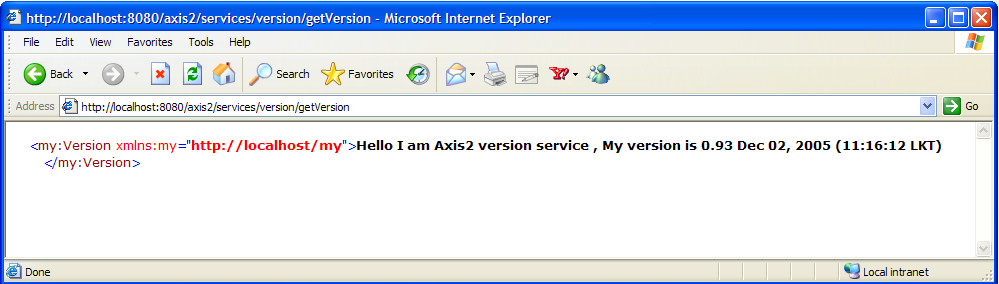

REST provides access to resources through the two methods GET and POST. REST Web services are a reduced subset of the usual Web service stack.
The Axis2 REST implementation assumes the following properties:
Axis2 can be configured as a REST Container and can be used to send and receive RESTful Web services requests and responses. REST Web services can be accessed in two ways, i.e. using HTTP GET and POST.
The REST default HTTP interface is POST. It can be enabled in the Server/Client side by adding the following line to the axis2.xml file.
< parameter name="enableREST" locked="false" > true </parameter>It however acts as both a REST endpoint and SOAP endpoint. When a Message is received, if the content type is text/xml and if the SOAP Action Headers are missing, then the Message is treated as a RESTful Message. Else it is treated as a usual SOAP Message.
On sending a message out, the fact that the message is RESTful or not, can be decided from the client API or by deployment descriptor of the client.
... Options options = new Options(); options.setProperty(Constants.Configuration.ENABLE_REST, Constants.VALUE_TRUE); ...
There is an example named, userguide.clients.RESTClient.java which demonstrates the usage of the above, using the "echo"operation of the
userguide.example1.MyService
of the samples.The class source will be as follows:
public class RESTClient {
private static String toEpr = "http://localhost:8080/axis2/services/MyService";
public static void main(String[] args) throws AxisFault {
Options options = new Options();
options.setTo(new EndpointReference(toEpr));
options.setTransportInProtocol(Constants.TRANSPORT_HTTP);
options.setProperty(Constants.Configuration.ENABLE_REST, Constants.VALUE_TRUE);
ServiceClient sender = new ServiceClient();
sender.engageModule(new QName(Constants.MODULE_ADDRESSING));
sender.setOptions(options);
OMElement result = sender.sendReceive(getPayload());
try {
XMLStreamWriter writer = XMLOutputFactory.newInstance()
.createXMLStreamWriter(System.out);
result.serialize(writer);
writer.flush();
} catch (XMLStreamException e) {
e.printStackTrace();
} catch (FactoryConfigurationError e) {
e.printStackTrace();
}
}
private static OMElement getPayload() {
OMFactory fac = OMAbstractFactory.getOMFactory();
OMNamespace omNs = fac.createOMNamespace(
"http://example1.org/example1", "example1");
OMElement method = fac.createOMElement("echo", omNs);
OMElement value = fac.createOMElement("Text", omNs);
value.addChild(fac.createText(value, "Axis2 Echo String "));
method.addChild(value);
return method;
}
}
Axis2 allow users to access Web services that have simple type parameters via HTTP GET. For example the following URL requests the Version Service via HTTP GET. But the Web service arriving via GET assumes REST. Other parameters are converted in to XML and put in to the SOAP Body.
http://127.0.0.1:8080/axis2/services/version/getVersion
Result can be shown in the browser as follows:
For example, the following request,
http://127.0.0.1:8080/axis2/services/version/getVersion
<soapenv:Envelope xmlns:soapenv="http://schemas.xmlsoap.org/soap/envelope/">
<soapenv:Body>
<axis2:getVersion xmlns:axis2="http://ws.apache.org/goGetWithREST" />
</soapenv:Body>
</soapenv:Envelope>